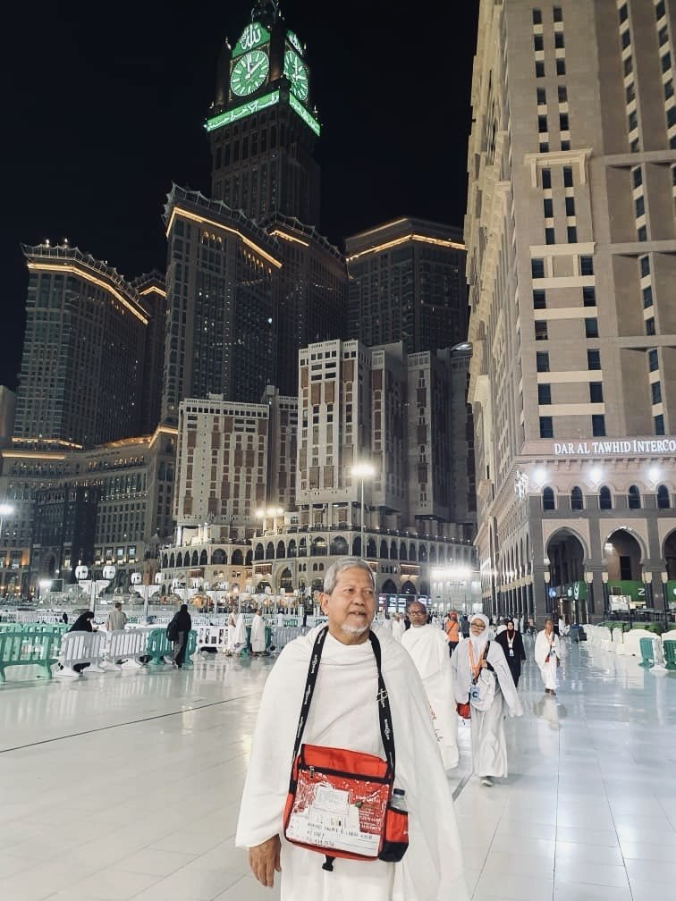
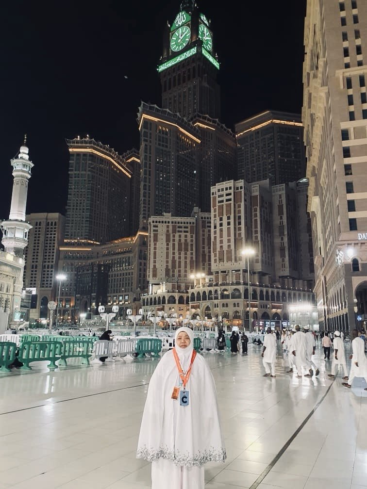
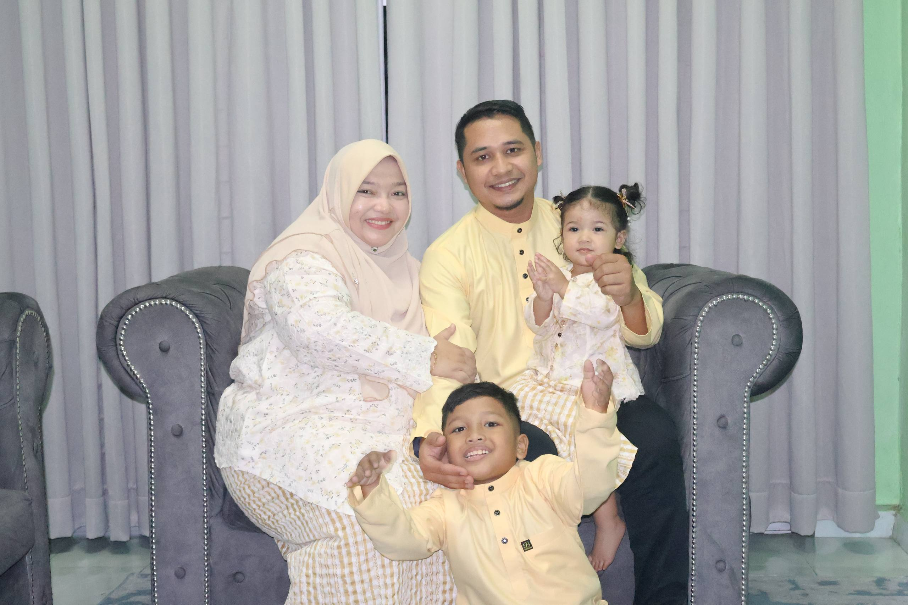
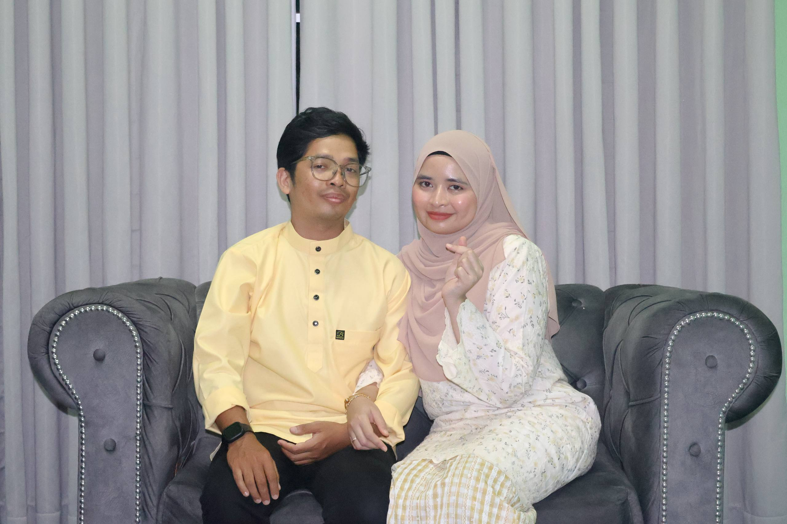
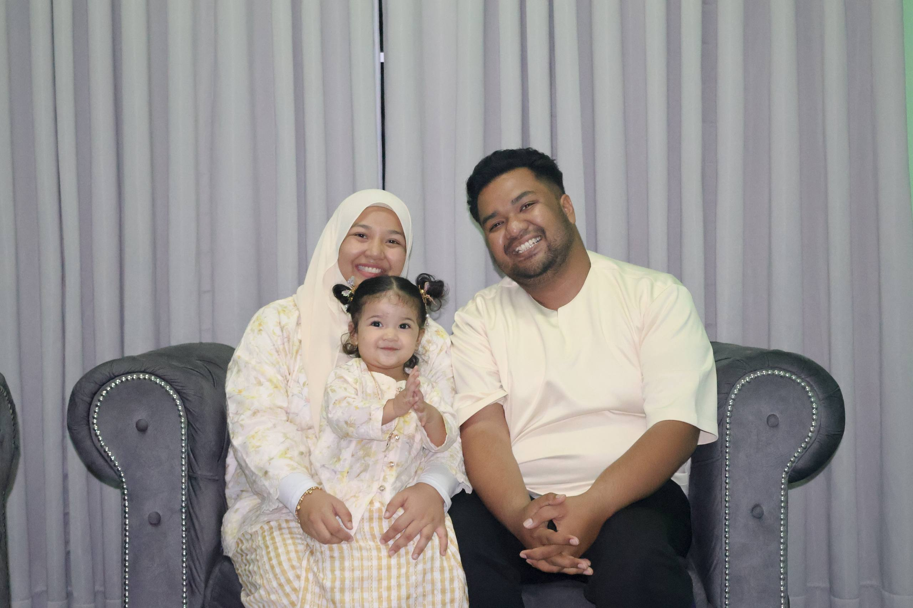

My father is 72 years old. He previously worked at the Majlis Perbandaran Seberang Perai (MPSP) and now is retired. He is now guru takmir who often gives talks and delivers tazkirah subuh at mosques. My father is a very strong person & ilove him very much!

My mother's name is Azizah. She is a former student of Universiti Malaya and completed her studies there. She is now working as an teacher. My mother ia a form 6 teacher who teaches Pengajian AM. She is a very strong person. I truly admire her and I love her very much.

This is my sister, Nur Alwani. She is 32 years old and the eldest among my siblings.She is currently running a small bussiness. She got married in 2016 and has a son named Muhammad Aryan Mikail, who is now 9 years old.

This is my brother, Muhammad Nur Amsyar. He is 29 years old and the second among our siblings. He studied at Universiti Malaysia Perlis (UniMAP) and is currently working in USS Singapore. He got married last year in 2025, to his beloved wife, Nur Aqilah.

This is my sister, Nur Amiera. She is 25 years old. She previously studied at Universiti Teknologi MARA (UiTM) Segamat, Johor and is currently working at Ansell Kulim, Kedah. She got married in 2023 and has a daughter named Nur Faradiba Az Zahra.